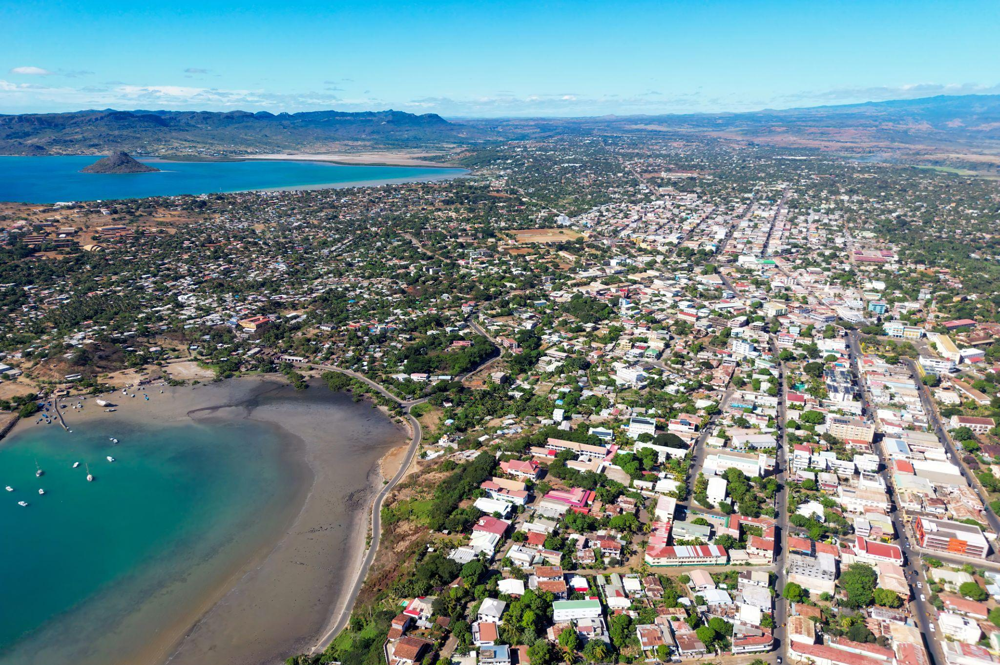
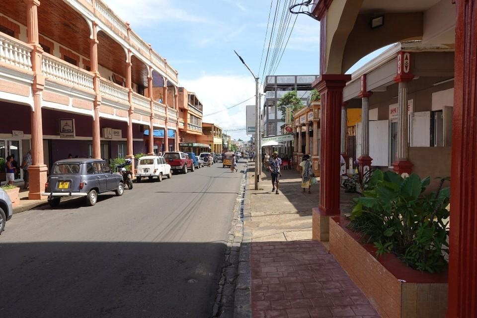
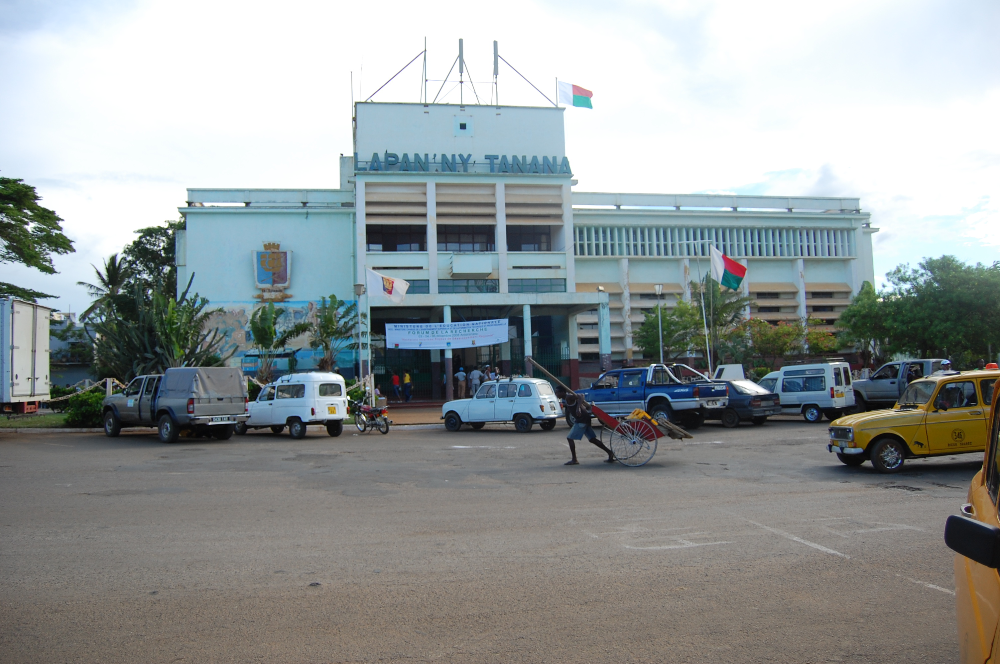

Antsiranana : une ville au nord de Madagascar



🌴Antsiranana, souvent appelée Diego-Suarez, est l'une des principales villes du nord de Madagascar. Elle est
située dans la région Diana, à l'extrême nord de l'île, au bord de l'immense baie d'Antsiranana. Elle est
également la capitale de la région Diana.
La ville est particulièrement intéressante parce qu'elle réunit trois choses : une histoire militaire et coloniale
importante, une forte identité culturelle et un environnement naturel exceptionnel.
📍 Quelques chiffres
- Pays : Madagascar
- Région : Diana
- District : Antsiranana I
- Code postal : 201
- Population : environ 129 000 habitants selon le recensement de 2018
- Ancien nom : Diego-Suarez
- Gentilé : Diégolais
- Altitude du centre-ville : autour de quelques dizaines de mètres au-dessus de la mer
- Position : extrême nord de Madagascar